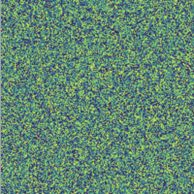
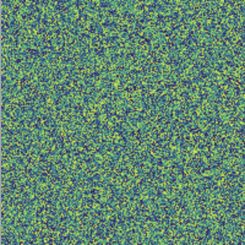

Image from colormap filter
July 19, 2023
swift-macos/xcode-playgrounds/ImageColormap.playground
A colormap can be applied to an image using a Core Image filter. The first step in this process, is to create a gradient image that represents the colormap. The function shown below creates a linear gradient image of the viridis colormap.
import Accelerate
/// Create a linear gradient image representing the viridis colormap.
/// - Returns: Image of the viridis colormap.
func makeViridisImage() -> CGImage {
// RGB values for viridis colormap
let viridis: [[UInt8]] = [
[253, 231, 37],
[181, 222, 43],
[110, 206, 88],
[53, 183, 121],
[31, 158, 137],
[38, 130, 142],
[49, 104, 142],
[62, 73, 137],
[72, 40, 120],
[68, 1, 84]
]
let viridisColors: [CGColor] = viridis.map { rgb in
let r = CGFloat(rgb[0]) / 255.0
let g = CGFloat(rgb[1]) / 255.0
let b = CGFloat(rgb[2]) / 255.0
return CGColor(srgbRed: r, green: g, blue: b, alpha: 1.0)
}
let colorSpace = CGColorSpace(name: CGColorSpace.sRGB)!
let gradient = CGGradient(colorsSpace: colorSpace,
colors: viridisColors as CFArray,
locations: nil)!
let width = 256
let height = 1
let bitmapInfo = CGImageAlphaInfo.premultipliedLast.rawValue
let context = CGContext(data: nil,
width: width,
height: height,
bitsPerComponent: 8,
bytesPerRow: width * 4,
space: colorSpace,
bitmapInfo: bitmapInfo)!
let start = CGPoint(x: 0, y: 0)
let end = CGPoint(x: width, y: 0)
context.drawLinearGradient(gradient, start: start, end: end, options: [])
let image = context.makeImage()!
return image
}
Next, a gray scale image is created from an array of data using the function shown here. The generated image is the input image that the Core Image filter will apply the colormap to.
import Accelerate
/// Create a gray scale image from an array using CGContext.
/// - Parameters:
/// - data: Array contains values from 0 to 1. Assume size of array is width x height.
/// - width: Width of the generated image.
/// - height: Height of the generated image.
/// - Returns: A gray scale CGImage.
func makeGrayImage(from data: [Float], width: Int, height: Int) -> CGImage {
// Convert array to gray scale RGB values
// Note gray scale RGB values are all same number such as 255, 255, 255 and 80, 80, 80
let dataGray = vDSP.multiply(255, data)
// Convert array to UInt8
var gray = vDSP.floatingPointToInteger(dataGray, integerType: UInt8.self, rounding: .towardNearestInteger)
// Create image
let colorSpace = CGColorSpace(name: CGColorSpace.linearGray)!
let bitmapInfo = CGImageAlphaInfo.none.rawValue
let context = CGContext(data: &gray,
width: width,
height: height,
bitsPerComponent: 8,
bytesPerRow: width,
space: colorSpace,
bitmapInfo: bitmapInfo)!
let image = context.makeImage()!
return image
}
This function creates an image from an input image and colormap gradient. The output of this function is the an image that has been generated from the colormap filter.
import CoreImage
/// Create an image from a colormap filter.
/// - Parameters:
/// - image: Image the colormap is applied to.
/// - gradient: Gradient representing the colormap.
/// - Returns: A colormapped image.
func makeColormapImage(image: CGImage, gradient: CGImage) -> CGImage {
// Convert to CIImage for filter
let inputImage = CIImage(cgImage: image)
let gradientImage = CIImage(cgImage: gradient)
let filter = CIFilter(name: "CIColorMap")!
filter.setValue(inputImage, forKey: kCIInputImageKey)
filter.setValue(gradientImage, forKey: kCIInputGradientImageKey)
let filteredImage = filter.outputImage!
let context = CIContext()
let image = context.createCGImage(filteredImage, from: filteredImage.extent)!
return image
}
In this example, a gray scale image is created from linear data that ranges from 0 to 1. The viridis colormap is applied to the gray scale image.
import Accelerate
import CoreImage
// Define width and height of image
let width = 200
let height = 200
// Data as a linear ramp from 0 to 1
let dataLinear = vDSP.ramp(in: Float.zero...1, count: width * height)
// Gradient image of the viridis colormap
let gradientImage = makeViridisImage()
// Linear colormap image
let grayImage = makeGrayImage(from: dataLinear, width: width, height: height)
let imageColormap = makeColormapImage(image: grayImage, gradient: gradientImage)

The next example applies the viridis colormap to a gray scale image that was generated from random data.
import Accelerate
import CoreImage
// Define width and height of image
let width = 200
let height = 200
// Data as random numbers from 0 to 1
var dataRandom = [Float](repeating: 0, count: width * height)
for i in 0..<dataRandom.count {
dataRandom[i] = .random(in: 0...1)
}
// Gradient image of the viridis colormap
let gradientImage = makeViridisImage()
// Random colormap image
let grayImage2 = makeGrayImage(from: dataRandom, width: width, height: height)
let imageColormap2 = makeColormapImage(image: grayImage2, gradient: gradientImage)
 

Gavin Wiggins © 2024